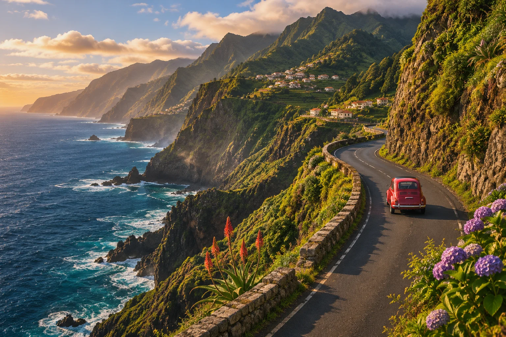

Ваше настроение
Даты, привычки, комфортный бюджет и то, чего точно не хочется в поездке.

Пункт назначения выберем вместе. Хорошее путешествие начинается с любопытства.
Не собирать достопримечательности.
А однажды свернуть — и найти своё место.
Кому-то нужен океан и книга. Кому-то — ранний поезд, шумный рынок и незнакомый город. Соберём поездку вокруг того, что нравится именно вам.
Три идеи для начала разговора. Это примеры маршрутов: даты, доступность и бюджет уточняются отдельно.
Тропы вдоль левад, утренний кофе с видом на Атлантику и дороги, на которых хочется останавливаться.
шага от «хочу» до «поехали»
Даты, привычки, комфортный бюджет и то, чего точно не хочется в поездке.
Предлагаем логику путешествия, проживание и перемещения. Обсуждаем детали.
Фиксируем состав поездки и условия бронирования перед оплатой.
Оставляем свободные часы: лучшие воспоминания не всегда бывают в плане.
Даже если пока знаете только «подальше от будней».